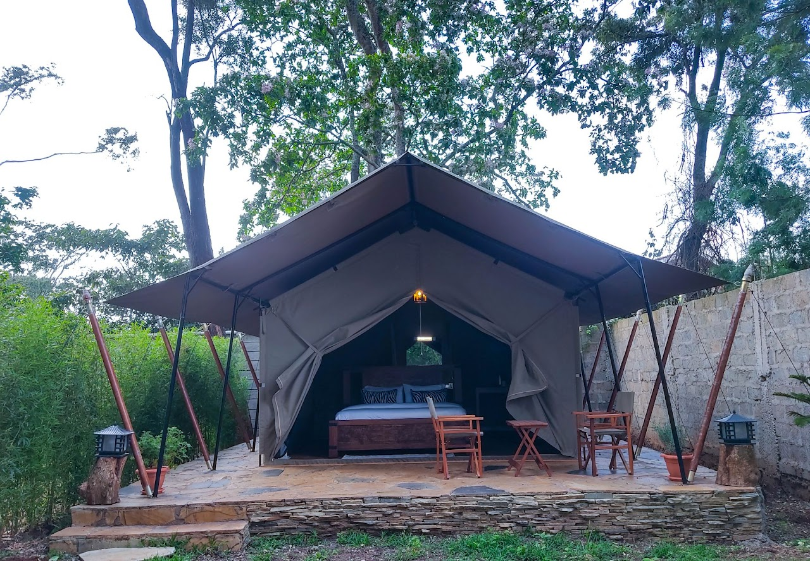

Luxury Eco Accommodations

Deluxe Eco Cottage
Luxurious tented cottage with private terrace, modern amenities, and stunning garden views.

Family Eco Suite
Spacious suite perfect for families, and eco-friendly amenities.